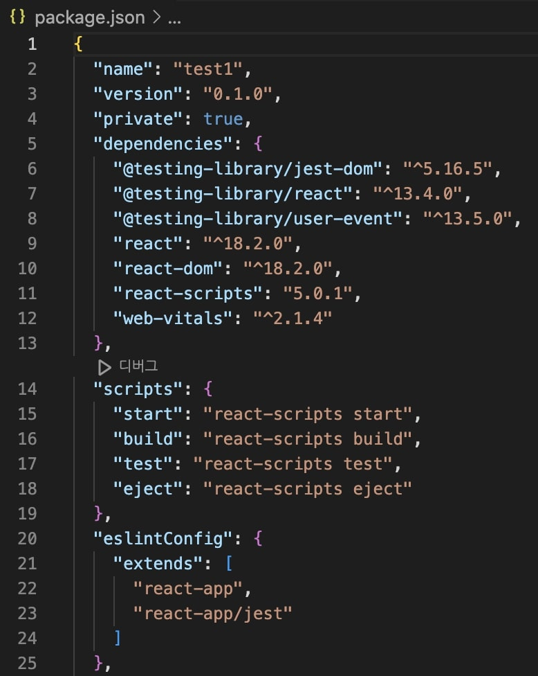

Package.json
package.json이란?
package.json은 현재 프로젝트에 대한 정보와 모듈(패키지)들의 의존성을 관리하는 파일이다. 항상 프로젝트의 root 디렉토리에 저장되며
프로젝트의 종속성 및 기타 정보를 저장한다.

package.json의 구조
package.json의 파일 내의 각 정보는 기본적으로 key-value로 저장되는 단일 JSON 객체이다. JSON을 작성할 때 반드시 모든 key는 쌍따옴표("")로 감싸야 하며,
쉼표(,)로 구분해줘야 한다.
package.json에는 필수적으로 해당 프로젝트에 관한 name과 version이 명시되어여 하며, 설치해야될 패키지들의 목록을 dependencies 또는 devDependencies에 명시할 수 있다.
dependencies와 devDependencies의 차이점
devDependencies는 패키지들을 배포할 때 필요하지 않은, 개발 환경에서만 사용하는 패키지들을 추가하는 곳이다.
css-loader, style-loader, Mocha, Jest, webpack 등을 예시로 들 수 있다.
조금 더 쉽게 설명하면, --save 옵션으로 "npm install [패키지명]" 명령어를 실행할 때 설치되는 패키지를 dependencies에 명시하고,
--save-dev 옵션으로 "npm install [패키지명]" 명령어를 실행할 때 설치되는 패키지는 devDependencies에 명시하면 된다.
package-lock.json
package-lock.json은 node-modules 구조나 package.json이 수정되고 생성될 때 당시의 의존성에 대한 정확하고 구체적인 정보를 품고 자동으로 생성되는 파일입니다.
여려명이 협업을 해야하는 프로젝트에서는 package.json을 사용해 각자의 컴퓨터에 같은 패키지를 설치해 같은 개발환경을 구성하게 된다.
하지만 같은 package.json을 사용하여 npm install을 진행하더라도 서로 다른 패키지가 설치되는 경우가 종종 발생한다.
보통의 경우에 문제는 다음과 같다.
1. NPM 버전이 다른 경우
2. 버전을 명시하지 않고 version range를 사용하여, 새로운 버전의 패키지가 설치된 경우
3. 내가 사용하는 패키지를 의존하고 있는 패키지가 새로운 버전으로 설치된 경우
첫번째의 경우 npm --version으로 버전을 확인한 후 버전을 일치시키는 걸로 해결할 수 있다. 하지만 개발하는 두 사람의 range-parser가 달라
실행되지 않으면 어떻게 될까? 개발한 사람의 반대쪽 사람은 테스트를 계속 실패할 것이다. 이런 상황을 피하기 위해 만들어진 것이 package-lock.json파일이다.
package-lock.json은 패키지나 package.json이 수정되거나 생성될 때의 의존성에 대한 정확하고 구체적인 정보를 갖고 자동으로 생성된다.
또한, package-lock.json이 존재할 때에는 npm install의 동작방식이 조금 변하는데,
package.json을 사용하지 않고 package-lock.json을 사용하여 node_modules를 설치한다.
Reference